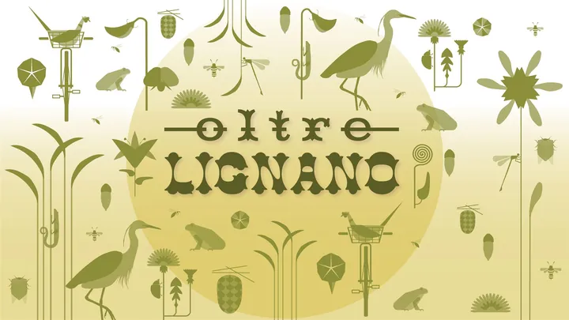

da sab 5 set a dom 13 set · dalle 07:30
Esterno Verde – Oltre Lignano
Prima edizione del festival che apre giardini e spazi verdi privati, con visite, podcast, laboratori e attività ambientali.
 Indicazioni
Indicazioni
- Costi e prenotazioni
- Attività gratuite · Prenotazione richiesta per visite ed escursioni
- Programma
- Programma pubblicato. Calendario delle quattro giornate disponibile, con prenotazioni per le attività indicate.
- In caso di maltempo
- Le attività sono distribuite tra esterni e sedi coperte; controllare gli avvisi del festival in caso di pioggia.
- Note
- Sedi diffuse: il ritrovo cambia per ogni attività.
L’EVENTO
Descrizione completa
Il festival esplora l’identità di Lignano attraverso paesaggio, architettura e storia. Le attività si distribuiscono fra laguna, mare e Tagliamento, nei due fine settimana del 5–6 e 12–13 settembre.
Il primo fine settimana propone itinerari guidati, incontri e laboratori. Il secondo aggiunge l’apertura eccezionale di giardini, ville e altre architetture: fra i luoghi coinvolti ci sono Casa Romanelli, Villa Anny, Marina Azzurra e il Grande Albergo Marin.
Ogni visita ha un proprio ritrovo. Le escursioni vanno scelte considerando durata, distanza e possibili sovrapposizioni; il collegamento alle prenotazioni permette di controllare le disponibilità.
IL PROGRAMMA
Programma e orari
Le attività con prenotazione sono indicate con (P). I ritrovi completi sono nel programma ufficiale collegato sotto.
In tutte le giornate: 5, 6, 12 e 13 settembre
- 07:30 · Fat bike sulla spiaggia (P).
- 09:00 · Giro storico in bici, 20 km (P).
- 09:00–12:00 · Racconti sul traghetto X River.
Sabato 5 settembre
- 09:30 · Passeggiata sulle dune (P).
- 10:00 · Pineta/Riviera in bici (P).
- 16:30 · Laboratorio artistico (P).
- 17:30 · Visita Hotel Italia Palace (P).
- 19:30 · Podcast dal vivo, Sun River.
Domenica 6 settembre
- 09:00 · Passeggiata sensoriale (P).
- 15:30 · Itinerario dei pionieri (P).
- 16:30 · Esplorazione della pineta (P).
- 17:00 · Santa Maria del Mare (P).
- 19:30 · Fauna notturna della laguna (P).
Sabato 12 settembre
- 08:00 · Escursione e-bike, 55 km (P).
- 10:00–19:00 · Illustrazioni di Attilio Cassinelli, biblioteca.
- 15:00 · Giardino Romanelli (P).
- 15:00–19:00 · Aperture autonome; mostre Villa Anny, Marin, Villa Susy, Quercia Moro.
- 16:00 · Bosco Riviera (P).
- 17:30 · Presentazione libro, Riviera Resort.
Domenica 13 settembre
- 10:00–13:00 · Aperture autonome e mostre.
- 15:00 · Itinerario D’Olivo in bici (P).
- 16:00 · Idrovora Val Lovato (P).
- 18:30 · Barca all’Isola delle Conchiglie (P).
INFORMAZIONI UTILI
Prima di partire
- Le sedi sono distribuite fra Sabbiadoro, Pineta e Riviera: controlla il ritrovo della visita prenotata.
- Le aperture in autonomia di giardini e architetture si concentrano nel secondo fine settimana.
- Contatti: info@internoverde.it · WhatsApp +39 339 152 4410
ORGANIZZAZIONE